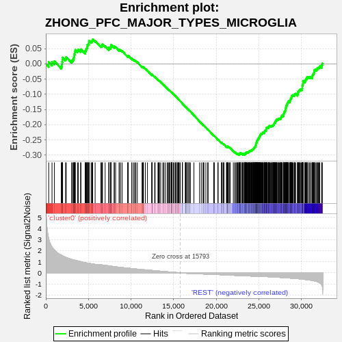
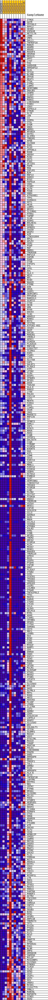
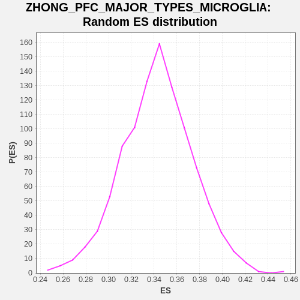

| | | Dataset | GTE_table.phenotypes_gte.cls#cluster0_versus_REST |
| Phenotype | phenotypes_gte.cls#cluster0_versus_REST |
| Upregulated in class | REST |
| GeneSet | ZHONG_PFC_MAJOR_TYPES_MICROGLIA |
| Enrichment Score (ES) | -0.29921168 |
| Normalized Enrichment Score (NES) | NaN |
| Nominal p-value | NaN |
| FDR q-value | 1.0 |
| FWER p-Value | 0.0 |
Table: GSEA Results Summary

Fig 1: Enrichment plot: ZHONG_PFC_MAJOR_TYPES_MICROGLIA
Profile of the Running ES Score & Positions of GeneSet Members on the Rank Ordered List
| SYMBOL | TITLE | RANK IN GENE LIST | RANK METRIC SCORE | RUNNING ES | CORE ENRICHMENT | | 1 | ITM2C | na | 338 | 3.073 | 0.0061 | No |
| 2 | GATM | na | 726 | 2.314 | 0.0066 | No |
| 3 | ZFP36L2 | na | 1010 | 2.043 | 0.0089 | No |
| 4 | APPL2 | na | 1815 | 1.580 | -0.0076 | No |
| 5 | SESN3 | na | 1897 | 1.547 | -0.0017 | No |
| 6 | HSPA1B | na | 1904 | 1.545 | 0.0065 | No |
| 7 | METTL7A | na | 1948 | 1.526 | 0.0134 | No |
| 8 | JUNB | na | 1974 | 1.519 | 0.0209 | No |
| 9 | VMP1 | na | 2316 | 1.400 | 0.0178 | No |
| 10 | SALL1 | na | 2399 | 1.377 | 0.0227 | No |
| 11 | TNFRSF1A | na | 3025 | 1.211 | 0.0098 | No |
| 12 | RAB29 | na | 3135 | 1.184 | 0.0128 | No |
| 13 | ADAM9 | na | 3224 | 1.167 | 0.0164 | No |
| 14 | ANXA5 | na | 3286 | 1.153 | 0.0208 | No |
| 15 | RASSF4 | na | 3315 | 1.147 | 0.0261 | No |
| 16 | SMIM30 | na | 3337 | 1.141 | 0.0317 | No |
| 17 | MED12L | na | 3403 | 1.129 | 0.0358 | No |
| 18 | DPP7 | na | 3411 | 1.128 | 0.0417 | No |
| 19 | LYST | na | 3467 | 1.117 | 0.0460 | No |
| 20 | FOS | na | 3723 | 1.069 | 0.0439 | No |
| 21 | GADD45B | na | 3808 | 1.054 | 0.0470 | No |
| 22 | ARHGAP12 | na | 4082 | 1.002 | 0.0439 | No |
| 23 | GLUL | na | 4121 | 0.993 | 0.0481 | No |
| 24 | IFI16 | na | 4613 | 0.918 | 0.0378 | No |
| 25 | BLVRB | na | 4618 | 0.918 | 0.0426 | No |
| 26 | ZFP36 | na | 4701 | 0.905 | 0.0450 | No |
| 27 | NEAT1 | na | 4743 | 0.897 | 0.0486 | No |
| 28 | CTSA | na | 4800 | 0.888 | 0.0516 | No |
| 29 | ITPR2 | na | 4856 | 0.881 | 0.0547 | No |
| 30 | LAMP2 | na | 4883 | 0.877 | 0.0587 | No |
| 31 | SERPINB6 | na | 4890 | 0.876 | 0.0632 | No |
| 32 | DNAJB1 | na | 4983 | 0.863 | 0.0650 | No |
| 33 | CEBPD | na | 5055 | 0.853 | 0.0674 | No |
| 34 | IL6ST | na | 5057 | 0.853 | 0.0720 | No |
| 35 | DNPH1 | na | 5078 | 0.850 | 0.0760 | No |
| 36 | RAB31 | na | 5315 | 0.821 | 0.0731 | No |
| 37 | LINC02256 | na | 5412 | 0.808 | 0.0745 | No |
| 38 | TIMP2 | na | 5460 | 0.801 | 0.0774 | No |
| 39 | CD63 | na | 5499 | 0.795 | 0.0805 | No |
| 40 | SIPA1L2 | na | 5787 | 0.759 | 0.0757 | No |
| 41 | ITM2B | na | 6462 | 0.723 | 0.0586 | No |
| 42 | PLTP | na | 6565 | 0.712 | 0.0593 | No |
| 43 | JUN | na | 6611 | 0.707 | 0.0617 | No |
| 44 | C3 | na | 6654 | 0.703 | 0.0642 | No |
| 45 | SIRPA | na | 6962 | 0.671 | 0.0583 | No |
| 46 | CTSL | na | 7398 | 0.624 | 0.0481 | No |
| 47 | STOM | na | 7405 | 0.623 | 0.0513 | No |
| 48 | GNG5 | na | 7422 | 0.621 | 0.0542 | No |
| 49 | WDR91 | na | 7600 | 0.602 | 0.0519 | No |
| 50 | NFKBIA | na | 7615 | 0.601 | 0.0548 | No |
| 51 | GSTK1 | na | 7657 | 0.595 | 0.0567 | No |
| 52 | GLIPR1 | na | 7658 | 0.595 | 0.0599 | No |
| 53 | TMBIM1 | na | 7660 | 0.595 | 0.0631 | No |
| 54 | APOE | na | 8025 | 0.557 | 0.0548 | No |
| 55 | SLC9A9 | na | 8034 | 0.557 | 0.0576 | No |
| 56 | EGR1 | na | 8192 | 0.540 | 0.0556 | No |
| 57 | PLD3 | na | 8601 | 0.502 | 0.0456 | No |
| 58 | ZFP36L1 | na | 8630 | 0.499 | 0.0475 | No |
| 59 | RHOB | na | 8785 | 0.484 | 0.0453 | No |
| 60 | ANXA4 | na | 8962 | 0.470 | 0.0423 | No |
| 61 | RIN2 | na | 9620 | 0.422 | 0.0241 | No |
| 62 | SAT1 | na | 9624 | 0.421 | 0.0263 | No |
| 63 | P3H2 | na | 9674 | 0.418 | 0.0271 | No |
| 64 | SFT2D1 | na | 10101 | 0.381 | 0.0159 | No |
| 65 | PDPN | na | 10105 | 0.380 | 0.0178 | No |
| 66 | MSN | na | 10326 | 0.362 | 0.0129 | No |
| 67 | IGFLR1 | na | 10443 | 0.352 | 0.0112 | No |
| 68 | B2M | na | 10570 | 0.341 | 0.0091 | No |
| 69 | RNF13 | na | 10741 | 0.329 | 0.0056 | No |
| 70 | DHRS3 | na | 11295 | 0.292 | -0.0100 | No |
| 71 | BTG2 | na | 11370 | 0.287 | -0.0108 | No |
| 72 | HSPA1A | na | 11449 | 0.281 | -0.0117 | No |
| 73 | CD81 | na | 11453 | 0.280 | -0.0103 | No |
| 74 | FCGRT | na | 11683 | 0.264 | -0.0160 | No |
| 75 | KLF6 | na | 11931 | 0.247 | -0.0223 | No |
| 76 | FOSB | na | 12448 | 0.213 | -0.0373 | No |
| 77 | GNB4 | na | 12456 | 0.212 | -0.0363 | No |
| 78 | ATP6V0E1 | na | 12457 | 0.212 | -0.0352 | No |
| 79 | TPP1 | na | 12475 | 0.211 | -0.0346 | No |
| 80 | S100A11 | na | 12770 | 0.190 | -0.0427 | No |
| 81 | PPT1 | na | 12831 | 0.186 | -0.0436 | No |
| 82 | HEXA | na | 13162 | 0.162 | -0.0530 | No |
| 83 | LAMP1 | na | 13220 | 0.159 | -0.0539 | No |
| 84 | NRIP1 | na | 13287 | 0.155 | -0.0551 | No |
| 85 | IL13RA1 | na | 13331 | 0.152 | -0.0556 | No |
| 86 | HTRA1 | na | 13485 | 0.142 | -0.0596 | No |
| 87 | TAPBP | na | 13732 | 0.124 | -0.0666 | No |
| 88 | IL6R | na | 13846 | 0.116 | -0.0695 | No |
| 89 | ASAH1 | na | 14012 | 0.107 | -0.0741 | No |
| 90 | BHLHE41 | na | 14237 | 0.093 | -0.0806 | No |
| 91 | HVCN1 | na | 14306 | 0.089 | -0.0822 | No |
| 92 | SPRED1 | na | 14435 | 0.081 | -0.0858 | No |
| 93 | CH25H | na | 14519 | 0.076 | -0.0879 | No |
| 94 | WASF2 | na | 14549 | 0.074 | -0.0884 | No |
| 95 | A2M | na | 14706 | 0.065 | -0.0929 | No |
| 96 | LINC01094 | na | 14740 | 0.063 | -0.0936 | No |
| 97 | NPC2 | na | 14753 | 0.062 | -0.0937 | No |
| 98 | APLP2 | na | 14799 | 0.058 | -0.0948 | No |
| 99 | IER2 | na | 14807 | 0.058 | -0.0947 | No |
| 100 | PSAP | na | 14819 | 0.057 | -0.0947 | No |
| 101 | MAF | na | 14965 | 0.047 | -0.0990 | No |
| 102 | RBMS1 | na | 15038 | 0.043 | -0.1010 | No |
| 103 | TMEM35B | na | 15197 | 0.034 | -0.1057 | No |
| 104 | RNF213 | na | 15252 | 0.031 | -0.1072 | No |
| 105 | CAPZB | na | 15284 | 0.029 | -0.1080 | No |
| 106 | EGR2 | na | 15313 | 0.028 | -0.1088 | No |
| 107 | CTSB | na | 15474 | 0.018 | -0.1136 | No |
| 108 | CYFIP1 | na | 15489 | 0.017 | -0.1140 | No |
| 109 | FTL | na | 15546 | 0.014 | -0.1157 | No |
| 110 | CPVL | na | 15628 | 0.010 | -0.1181 | No |
| 111 | AXL | na | 15647 | 0.009 | -0.1186 | No |
| 112 | HLA-C | na | 15774 | 0.001 | -0.1226 | No |
| 113 | NEU1 | na | 16017 | -0.011 | -0.1301 | No |
| 114 | NPL | na | 16022 | -0.011 | -0.1301 | No |
| 115 | RCN3 | na | 16045 | -0.012 | -0.1307 | No |
| 116 | NAA20 | na | 16383 | -0.032 | -0.1411 | No |
| 117 | PTPRE | na | 16397 | -0.032 | -0.1413 | No |
| 118 | GSN | na | 16405 | -0.033 | -0.1414 | No |
| 119 | GM2A | na | 16447 | -0.035 | -0.1424 | No |
| 120 | CASP1 | na | 16476 | -0.036 | -0.1431 | No |
| 121 | SERPINF1 | na | 16513 | -0.038 | -0.1440 | No |
| 122 | PPP1R18 | na | 16659 | -0.046 | -0.1483 | No |
| 123 | RAB3IL1 | na | 16678 | -0.047 | -0.1486 | No |
| 124 | SCAF11 | na | 16809 | -0.055 | -0.1524 | No |
| 125 | CTSD | na | 16820 | -0.055 | -0.1524 | No |
| 126 | HEXB | na | 16846 | -0.057 | -0.1529 | No |
| 127 | GRN | na | 16974 | -0.063 | -0.1565 | No |
| 128 | MYH9 | na | 17384 | -0.069 | -0.1688 | No |
| 129 | DOCK4 | na | 18050 | -0.081 | -0.1891 | No |
| 130 | TLN1 | na | 18250 | -0.091 | -0.1949 | No |
| 131 | ABHD12 | na | 18466 | -0.100 | -0.2010 | No |
| 132 | RUNX1 | na | 18481 | -0.101 | -0.2009 | No |
| 133 | BST2 | na | 18555 | -0.104 | -0.2026 | No |
| 134 | IFITM2 | na | 18786 | -0.112 | -0.2092 | No |
| 135 | ATP2B1-AS1 | na | 19005 | -0.115 | -0.2154 | No |
| 136 | CD164 | na | 19048 | -0.116 | -0.2160 | No |
| 137 | NAIP | na | 19709 | -0.135 | -0.2359 | No |
| 138 | SOCS6 | na | 19736 | -0.137 | -0.2360 | No |
| 139 | MAN2B1 | na | 19776 | -0.138 | -0.2364 | No |
| 140 | CREBL2 | na | 20192 | -0.153 | -0.2485 | No |
| 141 | APOC1 | na | 20230 | -0.155 | -0.2488 | No |
| 142 | CIAO2A | na | 20626 | -0.171 | -0.2602 | No |
| 143 | PLA2G15 | na | 20637 | -0.171 | -0.2596 | No |
| 144 | RNF130 | na | 20658 | -0.172 | -0.2593 | No |
| 145 | C20orf27 | na | 20809 | -0.177 | -0.2630 | No |
| 146 | TCIRG1 | na | 20872 | -0.180 | -0.2640 | No |
| 147 | EGR3 | na | 20915 | -0.181 | -0.2643 | No |
| 148 | C5AR1 | na | 21203 | -0.191 | -0.2722 | No |
| 149 | LIPA | na | 21232 | -0.192 | -0.2720 | No |
| 150 | SLC7A8 | na | 21296 | -0.195 | -0.2730 | No |
| 151 | CAP1 | na | 21310 | -0.195 | -0.2723 | No |
| 152 | GALNT1 | na | 21331 | -0.196 | -0.2719 | No |
| 153 | PLXDC2 | na | 21337 | -0.196 | -0.2709 | No |
| 154 | GYPC | na | 21383 | -0.199 | -0.2713 | No |
| 155 | LPIN2 | na | 21509 | -0.202 | -0.2741 | No |
| 156 | TLR4 | na | 21599 | -0.205 | -0.2757 | No |
| 157 | DUSP1 | na | 21636 | -0.207 | -0.2757 | No |
| 158 | IFNGR1 | na | 22011 | -0.219 | -0.2862 | No |
| 159 | MFSD1 | na | 22175 | -0.224 | -0.2901 | No |
| 160 | GAS6 | na | 22247 | -0.226 | -0.2911 | No |
| 161 | TGOLN2 | na | 22403 | -0.232 | -0.2946 | No |
| 162 | HLA-E | na | 22424 | -0.232 | -0.2940 | No |
| 163 | RAB32 | na | 22539 | -0.237 | -0.2963 | No |
| 164 | LY96 | na | 22555 | -0.237 | -0.2955 | No |
| 165 | POLD4 | na | 22650 | -0.239 | -0.2971 | No |
| 166 | CXCL16 | na | 22691 | -0.240 | -0.2970 | No |
| 167 | LST1 | na | 22749 | -0.242 | -0.2975 | No |
| 168 | MERTK | na | 22753 | -0.242 | -0.2963 | No |
| 169 | P2RX4 | na | 22754 | -0.242 | -0.2950 | No |
| 170 | SPP1 | na | 22819 | -0.245 | -0.2956 | No |
| 171 | LIMS1 | na | 22825 | -0.245 | -0.2945 | No |
| 172 | VSIR | na | 22833 | -0.245 | -0.2933 | No |
| 173 | JAG1 | na | 22836 | -0.246 | -0.2921 | No |
| 174 | RNASET2 | na | 22994 | -0.251 | -0.2956 | No |
| 175 | RNF135 | na | 23005 | -0.251 | -0.2946 | No |
| 176 | C2 | na | 23122 | -0.256 | -0.2968 | No |
| 177 | SFMBT2 | na | 23125 | -0.256 | -0.2955 | No |
| 178 | SORL1 | na | 23145 | -0.256 | -0.2947 | No |
| 179 | IGF1 | na | 23292 | -0.261 | -0.2978 | Yes |
| 180 | NINJ1 | na | 23305 | -0.262 | -0.2967 | Yes |
| 181 | NAGA | na | 23326 | -0.263 | -0.2959 | Yes |
| 182 | ADA2 | na | 23389 | -0.265 | -0.2964 | Yes |
| 183 | C1QB | na | 23402 | -0.265 | -0.2954 | Yes |
| 184 | IPCEF1 | na | 23423 | -0.266 | -0.2946 | Yes |
| 185 | GAL3ST4 | na | 23425 | -0.266 | -0.2932 | Yes |
| 186 | C1QA | na | 23493 | -0.268 | -0.2938 | Yes |
| 187 | TYROBP | na | 23504 | -0.268 | -0.2926 | Yes |
| 188 | FCGR2A | na | 23509 | -0.268 | -0.2913 | Yes |
| 189 | B3GNT5 | na | 23548 | -0.269 | -0.2910 | Yes |
| 190 | GAA | na | 23584 | -0.271 | -0.2907 | Yes |
| 191 | AIF1 | na | 23603 | -0.272 | -0.2897 | Yes |
| 192 | LGMN | na | 23649 | -0.273 | -0.2897 | Yes |
| 193 | CD14 | na | 23715 | -0.275 | -0.2902 | Yes |
| 194 | P2RY13 | na | 23774 | -0.277 | -0.2905 | Yes |
| 195 | CD68 | na | 23805 | -0.278 | -0.2899 | Yes |
| 196 | MBNL1 | na | 23839 | -0.279 | -0.2894 | Yes |
| 197 | P2RY12 | na | 23847 | -0.279 | -0.2881 | Yes |
| 198 | FCER1G | na | 23886 | -0.281 | -0.2878 | Yes |
| 199 | CEBPA | na | 23893 | -0.281 | -0.2865 | Yes |
| 200 | KCTD12 | na | 23903 | -0.281 | -0.2852 | Yes |
| 201 | PSMB10 | na | 23955 | -0.283 | -0.2853 | Yes |
| 202 | TLR7 | na | 24011 | -0.284 | -0.2855 | Yes |
| 203 | SERPINA1 | na | 24034 | -0.285 | -0.2846 | Yes |
| 204 | LINC02712 | na | 24099 | -0.286 | -0.2850 | Yes |
| 205 | TMIGD3 | na | 24113 | -0.287 | -0.2839 | Yes |
| 206 | FCGR1B | na | 24149 | -0.288 | -0.2834 | Yes |
| 207 | C1QC | na | 24212 | -0.289 | -0.2838 | Yes |
| 208 | PLCB2 | na | 24228 | -0.290 | -0.2827 | Yes |
| 209 | SLC7A7 | na | 24237 | -0.290 | -0.2814 | Yes |
| 210 | FCGR3A | na | 24263 | -0.291 | -0.2806 | Yes |
| 211 | GNAI2 | na | 24321 | -0.293 | -0.2807 | Yes |
| 212 | TMEM52B | na | 24362 | -0.294 | -0.2804 | Yes |
| 213 | VSIG4 | na | 24370 | -0.294 | -0.2790 | Yes |
| 214 | NR3C1 | na | 24395 | -0.295 | -0.2782 | Yes |
| 215 | CSF1R | na | 24426 | -0.296 | -0.2775 | Yes |
| 216 | SIGLEC8 | na | 24438 | -0.297 | -0.2762 | Yes |
| 217 | CCL3 | na | 24442 | -0.297 | -0.2747 | Yes |
| 218 | ADORA3 | na | 24482 | -0.298 | -0.2743 | Yes |
| 219 | OLR1 | na | 24524 | -0.299 | -0.2740 | Yes |
| 220 | MNDA | na | 24541 | -0.299 | -0.2728 | Yes |
| 221 | CCL4L2 | na | 24588 | -0.300 | -0.2726 | Yes |
| 222 | CD300A | na | 24595 | -0.301 | -0.2712 | Yes |
| 223 | ATP8B4 | na | 24605 | -0.301 | -0.2699 | Yes |
| 224 | FOLR2 | na | 24616 | -0.301 | -0.2685 | Yes |
| 225 | FPR1 | na | 24625 | -0.301 | -0.2671 | Yes |
| 226 | CYBB | na | 24656 | -0.302 | -0.2664 | Yes |
| 227 | AP1B1 | na | 24660 | -0.302 | -0.2649 | Yes |
| 228 | TREM2 | na | 24663 | -0.302 | -0.2633 | Yes |
| 229 | ABCG2 | na | 24664 | -0.302 | -0.2617 | Yes |
| 230 | FCGR1A | na | 24677 | -0.303 | -0.2604 | Yes |
| 231 | PLD4 | na | 24691 | -0.303 | -0.2592 | Yes |
| 232 | MS4A7 | na | 24746 | -0.305 | -0.2592 | Yes |
| 233 | MKNK1 | na | 24752 | -0.305 | -0.2577 | Yes |
| 234 | RNASE6 | na | 24776 | -0.305 | -0.2568 | Yes |
| 235 | TMEM119 | na | 24781 | -0.305 | -0.2552 | Yes |
| 236 | GPR34 | na | 24791 | -0.306 | -0.2538 | Yes |
| 237 | RGS1 | na | 24795 | -0.306 | -0.2523 | Yes |
| 238 | IGSF6 | na | 24828 | -0.307 | -0.2516 | Yes |
| 239 | PTAFR | na | 24835 | -0.307 | -0.2501 | Yes |
| 240 | CSF3R | na | 24868 | -0.308 | -0.2495 | Yes |
| 241 | GNG7 | na | 24874 | -0.308 | -0.2480 | Yes |
| 242 | PLA2G7 | na | 24932 | -0.309 | -0.2481 | Yes |
| 243 | ITGB2 | na | 24958 | -0.310 | -0.2472 | Yes |
| 244 | CCR1 | na | 24966 | -0.310 | -0.2457 | Yes |
| 245 | CX3CR1 | na | 24968 | -0.310 | -0.2440 | Yes |
| 246 | TMIGD2 | na | 25016 | -0.311 | -0.2438 | Yes |
| 247 | TBXAS1 | na | 25023 | -0.311 | -0.2423 | Yes |
| 248 | GPR183 | na | 25024 | -0.311 | -0.2406 | Yes |
| 249 | LAIR1 | na | 25066 | -0.312 | -0.2402 | Yes |
| 250 | LILRB4 | na | 25088 | -0.313 | -0.2392 | Yes |
| 251 | ITGAM | na | 25093 | -0.313 | -0.2376 | Yes |
| 252 | TNFAIP8L2 | na | 25113 | -0.314 | -0.2365 | Yes |
| 253 | TFEC | na | 25139 | -0.314 | -0.2356 | Yes |
| 254 | MGST2 | na | 25175 | -0.315 | -0.2349 | Yes |
| 255 | PARVG | na | 25181 | -0.315 | -0.2334 | Yes |
| 256 | ITGAX | na | 25215 | -0.316 | -0.2327 | Yes |
| 257 | LTC4S | na | 25225 | -0.317 | -0.2313 | Yes |
| 258 | CCL4 | na | 25235 | -0.317 | -0.2298 | Yes |
| 259 | ALOX5 | na | 25311 | -0.319 | -0.2304 | Yes |
| 260 | SELPLG | na | 25326 | -0.319 | -0.2291 | Yes |
| 261 | RYR1 | na | 25395 | -0.321 | -0.2295 | Yes |
| 262 | AOAH | na | 25405 | -0.322 | -0.2281 | Yes |
| 263 | C3AR1 | na | 25436 | -0.323 | -0.2272 | Yes |
| 264 | CRYBB1 | na | 25460 | -0.324 | -0.2262 | Yes |
| 265 | HPGDS | na | 25476 | -0.325 | -0.2249 | Yes |
| 266 | CYTH4 | na | 25554 | -0.327 | -0.2255 | Yes |
| 267 | SAMSN1 | na | 25641 | -0.330 | -0.2264 | Yes |
| 268 | CD74 | na | 25654 | -0.331 | -0.2250 | Yes |
| 269 | MRC1 | na | 25676 | -0.332 | -0.2239 | Yes |
| 270 | LPAR5 | na | 25685 | -0.332 | -0.2223 | Yes |
| 271 | HCK | na | 25692 | -0.332 | -0.2207 | Yes |
| 272 | BIN2 | na | 25733 | -0.333 | -0.2201 | Yes |
| 273 | FYB1 | na | 25759 | -0.334 | -0.2191 | Yes |
| 274 | CD86 | na | 25801 | -0.336 | -0.2185 | Yes |
| 275 | MYO1F | na | 25863 | -0.339 | -0.2186 | Yes |
| 276 | NABP1 | na | 25866 | -0.339 | -0.2168 | Yes |
| 277 | CD4 | na | 25869 | -0.339 | -0.2151 | Yes |
| 278 | DHRS9 | na | 25871 | -0.339 | -0.2132 | Yes |
| 279 | CD83 | na | 25900 | -0.340 | -0.2123 | Yes |
| 280 | EGFL7 | na | 25906 | -0.340 | -0.2106 | Yes |
| 281 | IER3 | na | 25950 | -0.341 | -0.2101 | Yes |
| 282 | MANBA | na | 25963 | -0.342 | -0.2086 | Yes |
| 283 | FGD2 | na | 26032 | -0.345 | -0.2088 | Yes |
| 284 | SP100 | na | 26133 | -0.349 | -0.2101 | Yes |
| 285 | MILR1 | na | 26161 | -0.350 | -0.2090 | Yes |
| 286 | ALOX5AP | na | 26165 | -0.350 | -0.2072 | Yes |
| 287 | OTUD1 | na | 26166 | -0.350 | -0.2053 | Yes |
| 288 | NR4A2 | na | 26215 | -0.352 | -0.2049 | Yes |
| 289 | STAB1 | na | 26246 | -0.354 | -0.2039 | Yes |
| 290 | LPCAT2 | na | 26284 | -0.355 | -0.2031 | Yes |
| 291 | LY86 | na | 26383 | -0.359 | -0.2042 | Yes |
| 292 | SLC29A3 | na | 26474 | -0.362 | -0.2051 | Yes |
| 293 | MYL12A | na | 26525 | -0.365 | -0.2047 | Yes |
| 294 | OAS1 | na | 26565 | -0.366 | -0.2039 | Yes |
| 295 | OLFML3 | na | 26580 | -0.367 | -0.2023 | Yes |
| 296 | MPP1 | na | 26667 | -0.371 | -0.2030 | Yes |
| 297 | RHOG | na | 26674 | -0.371 | -0.2012 | Yes |
| 298 | ABI3 | na | 26722 | -0.374 | -0.2006 | Yes |
| 299 | HAVCR2 | na | 26764 | -0.376 | -0.1999 | Yes |
| 300 | PLVAP | na | 26781 | -0.377 | -0.1983 | Yes |
| 301 | LPAR6 | na | 26793 | -0.377 | -0.1966 | Yes |
| 302 | IL17RA | na | 26823 | -0.378 | -0.1955 | Yes |
| 303 | LAT2 | na | 26848 | -0.379 | -0.1942 | Yes |
| 304 | ADRB2 | na | 26870 | -0.380 | -0.1927 | Yes |
| 305 | CD84 | na | 26927 | -0.383 | -0.1924 | Yes |
| 306 | SIGLEC10 | na | 26948 | -0.384 | -0.1910 | Yes |
| 307 | LHFPL2 | na | 26970 | -0.385 | -0.1895 | Yes |
| 308 | ADAP2 | na | 26976 | -0.385 | -0.1876 | Yes |
| 309 | SLC15A3 | na | 27034 | -0.388 | -0.1873 | Yes |
| 310 | WAS | na | 27042 | -0.388 | -0.1854 | Yes |
| 311 | COLGALT1 | na | 27096 | -0.391 | -0.1849 | Yes |
| 312 | IFI30 | na | 27107 | -0.392 | -0.1831 | Yes |
| 313 | SCAMP2 | na | 27125 | -0.392 | -0.1815 | Yes |
| 314 | RGS19 | na | 27213 | -0.396 | -0.1821 | Yes |
| 315 | VAV1 | na | 27297 | -0.399 | -0.1825 | Yes |
| 316 | OTULINL | na | 27300 | -0.399 | -0.1804 | Yes |
| 317 | RGS10 | na | 27362 | -0.402 | -0.1801 | Yes |
| 318 | TAGAP | na | 27435 | -0.405 | -0.1801 | Yes |
| 319 | MGAT4A | na | 27477 | -0.407 | -0.1792 | Yes |
| 320 | PALD1 | na | 27556 | -0.410 | -0.1794 | Yes |
| 321 | LINC00996 | na | 27563 | -0.411 | -0.1774 | Yes |
| 322 | PDGFB | na | 27596 | -0.412 | -0.1761 | Yes |
| 323 | DAB2 | na | 27633 | -0.414 | -0.1750 | Yes |
| 324 | ARHGAP9 | na | 27657 | -0.415 | -0.1735 | Yes |
| 325 | BRI3 | na | 27670 | -0.416 | -0.1716 | Yes |
| 326 | TM6SF1 | na | 27716 | -0.418 | -0.1707 | Yes |
| 327 | TAL1 | na | 27730 | -0.419 | -0.1689 | Yes |
| 328 | ARRB2 | na | 27870 | -0.425 | -0.1709 | Yes |
| 329 | PLEK | na | 27904 | -0.427 | -0.1696 | Yes |
| 330 | ARHGAP4 | na | 27922 | -0.428 | -0.1678 | Yes |
| 331 | HLA-B | na | 27925 | -0.428 | -0.1656 | Yes |
| 332 | ACY3 | na | 27931 | -0.428 | -0.1634 | Yes |
| 333 | TNFRSF1B | na | 27966 | -0.430 | -0.1621 | Yes |
| 334 | LAPTM5 | na | 27979 | -0.430 | -0.1602 | Yes |
| 335 | ENTPD1 | na | 27992 | -0.431 | -0.1582 | Yes |
| 336 | RB1 | na | 28024 | -0.433 | -0.1568 | Yes |
| 337 | CMTM7 | na | 28035 | -0.433 | -0.1548 | Yes |
| 338 | PTPN6 | na | 28094 | -0.437 | -0.1542 | Yes |
| 339 | NR4A1 | na | 28130 | -0.438 | -0.1529 | Yes |
| 340 | SLCO2B1 | na | 28155 | -0.440 | -0.1513 | Yes |
| 341 | HCLS1 | na | 28160 | -0.440 | -0.1490 | Yes |
| 342 | PDK4 | na | 28172 | -0.441 | -0.1470 | Yes |
| 343 | STXBP2 | na | 28180 | -0.441 | -0.1448 | Yes |
| 344 | HERPUD1 | na | 28191 | -0.442 | -0.1427 | Yes |
| 345 | CMTM6 | na | 28213 | -0.443 | -0.1410 | Yes |
| 346 | REEP4 | na | 28224 | -0.444 | -0.1389 | Yes |
| 347 | IL10RA | na | 28228 | -0.444 | -0.1365 | Yes |
| 348 | GIMAP4 | na | 28302 | -0.448 | -0.1364 | Yes |
| 349 | CTSS | na | 28314 | -0.449 | -0.1343 | Yes |
| 350 | SRGN | na | 28333 | -0.449 | -0.1324 | Yes |
| 351 | ADAM28 | na | 28342 | -0.450 | -0.1302 | Yes |
| 352 | IRF8 | na | 28373 | -0.452 | -0.1287 | Yes |
| 353 | PYCARD | na | 28408 | -0.454 | -0.1273 | Yes |
| 354 | ATM | na | 28433 | -0.455 | -0.1256 | Yes |
| 355 | DOCK8 | na | 28475 | -0.457 | -0.1244 | Yes |
| 356 | KLF2 | na | 28497 | -0.458 | -0.1226 | Yes |
| 357 | CD36 | na | 28649 | -0.466 | -0.1247 | Yes |
| 358 | APBB1IP | na | 28659 | -0.467 | -0.1225 | Yes |
| 359 | CPED1 | na | 28669 | -0.467 | -0.1202 | Yes |
| 360 | VAMP8 | na | 28700 | -0.469 | -0.1186 | Yes |
| 361 | MEF2A | na | 28710 | -0.470 | -0.1163 | Yes |
| 362 | SASH3 | na | 28739 | -0.471 | -0.1147 | Yes |
| 363 | CREG1 | na | 28792 | -0.474 | -0.1137 | Yes |
| 364 | MGAT1 | na | 28819 | -0.475 | -0.1119 | Yes |
| 365 | PTPRC | na | 28826 | -0.476 | -0.1095 | Yes |
| 366 | DOCK2 | na | 28857 | -0.478 | -0.1079 | Yes |
| 367 | FLI1 | na | 28886 | -0.479 | -0.1062 | Yes |
| 368 | FRMD4A | na | 28897 | -0.479 | -0.1039 | Yes |
| 369 | NCF4 | na | 28953 | -0.482 | -0.1030 | Yes |
| 370 | ANXA11 | na | 29031 | -0.487 | -0.1027 | Yes |
| 371 | OSTF1 | na | 29157 | -0.496 | -0.1039 | Yes |
| 372 | CD53 | na | 29182 | -0.497 | -0.1020 | Yes |
| 373 | XBP1 | na | 29185 | -0.498 | -0.0994 | Yes |
| 374 | TACC1 | na | 29267 | -0.504 | -0.0991 | Yes |
| 375 | CTSC | na | 29315 | -0.507 | -0.0979 | Yes |
| 376 | NCKAP1L | na | 29542 | -0.522 | -0.1021 | Yes |
| 377 | LYN | na | 29556 | -0.523 | -0.0996 | Yes |
| 378 | SGK1 | na | 29580 | -0.525 | -0.0975 | Yes |
| 379 | RGS2 | na | 29604 | -0.526 | -0.0954 | Yes |
| 380 | ZFHX3 | na | 29621 | -0.527 | -0.0930 | Yes |
| 381 | MAST3 | na | 29630 | -0.528 | -0.0904 | Yes |
| 382 | PRR13 | na | 29708 | -0.533 | -0.0899 | Yes |
| 383 | FAM78A | na | 29717 | -0.534 | -0.0873 | Yes |
| 384 | RHBDF2 | na | 29774 | -0.538 | -0.0861 | Yes |
| 385 | ACTR2 | na | 29864 | -0.547 | -0.0859 | Yes |
| 386 | TSC22D3 | na | 29872 | -0.548 | -0.0831 | Yes |
| 387 | TMC6 | na | 30002 | -0.557 | -0.0841 | Yes |
| 388 | CORO1A | na | 30084 | -0.564 | -0.0836 | Yes |
| 389 | CNPY3 | na | 30092 | -0.565 | -0.0808 | Yes |
| 390 | LCP1 | na | 30109 | -0.566 | -0.0782 | Yes |
| 391 | SH2B3 | na | 30112 | -0.567 | -0.0752 | Yes |
| 392 | BIN1 | na | 30113 | -0.567 | -0.0721 | Yes |
| 393 | PFN1 | na | 30156 | -0.570 | -0.0703 | Yes |
| 394 | GPSM3 | na | 30157 | -0.570 | -0.0672 | Yes |
| 395 | ARPC1B | na | 30181 | -0.572 | -0.0648 | Yes |
| 396 | TMEM273 | na | 30184 | -0.572 | -0.0618 | Yes |
| 397 | TPT1 | na | 30187 | -0.572 | -0.0587 | Yes |
| 398 | EVI2A | na | 30189 | -0.573 | -0.0557 | Yes |
| 399 | PTGS1 | na | 30396 | -0.590 | -0.0589 | Yes |
| 400 | MPEG1 | na | 30428 | -0.593 | -0.0566 | Yes |
| 401 | ELF1 | na | 30478 | -0.598 | -0.0549 | Yes |
| 402 | HCST | na | 30502 | -0.600 | -0.0524 | Yes |
| 403 | SYK | na | 30528 | -0.603 | -0.0499 | Yes |
| 404 | SWAP70 | na | 30615 | -0.611 | -0.0493 | Yes |
| 405 | CYBA | na | 30633 | -0.612 | -0.0465 | Yes |
| 406 | RPS6KA1 | na | 30656 | -0.614 | -0.0438 | Yes |
| 407 | PAG1 | na | 30722 | -0.619 | -0.0425 | Yes |
| 408 | BLNK | na | 30882 | -0.635 | -0.0440 | Yes |
| 409 | GMFG | na | 30977 | -0.644 | -0.0434 | Yes |
| 410 | ARHGDIB | na | 31116 | -0.660 | -0.0442 | Yes |
| 411 | INPP5D | na | 31256 | -0.676 | -0.0448 | Yes |
| 412 | MYLIP | na | 31266 | -0.678 | -0.0414 | Yes |
| 413 | MIS18BP1 | na | 31299 | -0.683 | -0.0387 | Yes |
| 414 | SLC29A1 | na | 31324 | -0.687 | -0.0357 | Yes |
| 415 | SYNGR2 | na | 31378 | -0.695 | -0.0336 | Yes |
| 416 | TLR10 | na | 31428 | -0.702 | -0.0313 | Yes |
| 417 | IL16 | na | 31476 | -0.710 | -0.0290 | Yes |
| 418 | GPN3 | na | 31493 | -0.712 | -0.0256 | Yes |
| 419 | CD37 | na | 31527 | -0.718 | -0.0227 | Yes |
| 420 | IKZF1 | na | 31549 | -0.721 | -0.0195 | Yes |
| 421 | UCP2 | na | 31652 | -0.740 | -0.0186 | Yes |
| 422 | FES | na | 31795 | -0.770 | -0.0189 | Yes |
| 423 | SMAP2 | na | 31837 | -0.779 | -0.0159 | Yes |
| 424 | RCSD1 | na | 31892 | -0.794 | -0.0133 | Yes |
| 425 | C12orf75 | na | 32001 | -0.828 | -0.0122 | Yes |
| 426 | FMNL3 | na | 32091 | -0.872 | -0.0102 | Yes |
| 427 | RUBCNL | na | 32155 | -0.896 | -0.0073 | Yes |
| 428 | RAPGEF6 | na | 32382 | -1.050 | -0.0087 | Yes |
| 429 | CCND1 | na | 32410 | -1.091 | -0.0036 | Yes |
| 430 | GGA2 | na | 32456 | -1.174 | 0.0014 | Yes |
Table: GSEA details [plain text format]

Fig 2: ZHONG_PFC_MAJOR_TYPES_MICROGLIA
Blue-Pink O' Gram in the Space of the Analyzed GeneSet

Fig 3: ZHONG_PFC_MAJOR_TYPES_MICROGLIA: Random ES distribution
Gene set null distribution of ES for ZHONG_PFC_MAJOR_TYPES_MICROGLIA